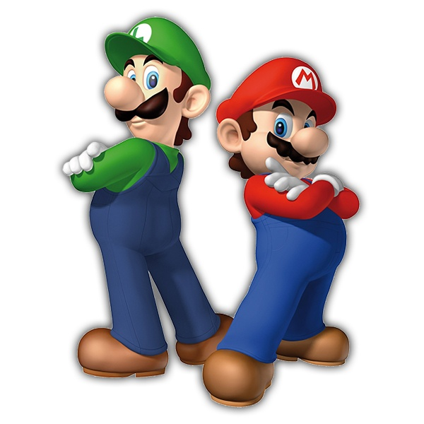

Luigi es el hermano de Mario y uno de los héroes del Reino Champiñón. Destaca por su valentía, su salto más alto y su papel protagonista en Luigi’s Mansion, donde caza fantasmas con la Succionaentes.
Luigi debutó como segundo jugador en Mario Bros. (1983) y ganó identidad propia en Super Mario Bros. (1985). Desde entonces ha acompañado a Mario en numerosas aventuras.
Es jugable en la saga principal y en múltiples juegos: Mario Kart, Mario Party, juegos deportivos y Super Smash Bros.. También protagoniza Luigi’s Mansion 1–3.
Luigi, el héroe tímido del Reino Champiñón.
El duo dinamico
Aqui les voy a decir como fue que Luigi debutó oficialmente en 1983 en el Game & Watch Mario Bros., trabajando junto a Mario en un juego cooperativo. Este video lo celebra como el origen del dúo dinámico que marcaría décadas de videojuegos
Bueno y antes de acabar te dejo aqui unas 5 curiosidades de luigi por si quieres verla